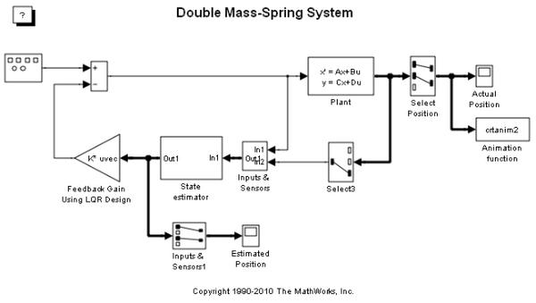
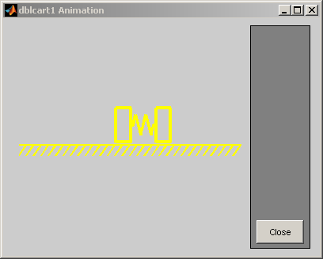
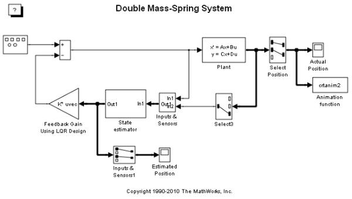
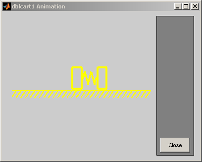

二重バネ-マス システム
このシステムでは、強制関数が定期的に変化する二重バネ-マス-ダンパー システムがモデル化されます。 このデモに関連付けられているアニメーション関数により、Figure ウィンドウが自動的に開いて表示されます。 このシステムでは、唯一のセンサーが左側のおもりに取り付けられており、アクチュエータも左側のおもりに取り付けられています。 状態の推定と LQR 制御が使用されます。
 このシステムでは、強制関数が定期的に変化する二重バネ-マス-ダンパー システムがモデル化されます。 このデモに関連付けられているアニメーション関数により、Figure ウィンドウが自動的に開いて表示されます。 このシステムでは、唯一のセンサーが左側のおもりに取り付けられており、アクチュエータも左側のおもりに取り付けられています。 状態の推定と LQR 制御が使用されます。
 